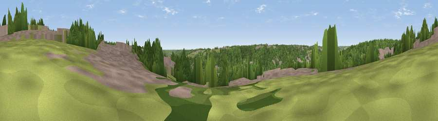

Viewpoint near High Wycombe
#42708 in England · top 71% of its area beats it · near High WycombeThe view, rendered

A 360° render of this exact spot computed from the terrain model, tree cover and land cover — summer colours, afternoon light, calibrated against photographs of famous viewpoints. Real trees, hedges and buildings will differ in detail.
The panorama
Grey silhouette: terrain skyline in each direction (720 bearings, Earth curvature and refraction included). Dashed green: skyline with trees (+15 m) and buildings (+8 m) as obstacles. Blue strip: how far the ground is visible on each bearing.
Where the view opens
Wedge length = distance to the farthest visible ground on that bearing (vegetation-aware). Rings at 10, 25 and 50 km.
What fills the view
55% woodland · 30% built-up · 14% grassland · 1% cropland
Angular shares of the visible panorama (visual magnitude), not map area. Landscape diversity 0.45 (0–1 Shannon).
Key numbers
More beautiful places nearby
The staircase of upgrades: each row has a higher view potential than everything closer. Driving times are estimates from straight-line distance, calibrated against real road routing — check an actual route before setting out.
| Place | Direction | Drive | Score |
|---|---|---|---|
| Viewpoint near High Wycombe | NW · 1 km | ~4 min | 32.2 |
| Viewpoint near Loudwater | ESE · 2 km | ~5 min | 35.7 |
| Viewpoint near Loudwater | ESE · 3 km | ~7 min | 47.5 |
| Viewpoint near Downley | NW · 4 km | ~10 min | 49.2 |
| Fultness Wood Hill | SSW · 9 km | ~17 min | 57.8 |
| Viewpoint near Whiteleaf | NNW · 12 km | ~22 min | 58.2 |
| Brush Hill | NNW · 12 km | ~22 min | 67.9 |
| Viewpoint near Whiteleaf | NNW · 12 km | ~23 min | 70.1 |
51.62915, -0.72823 · source: screening · position refined by local search. Computed location — check access rights before visiting.